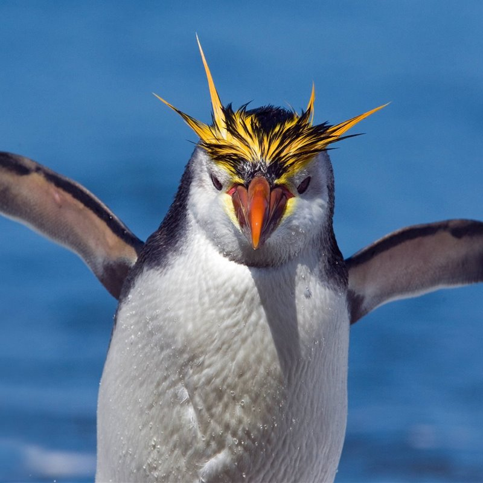
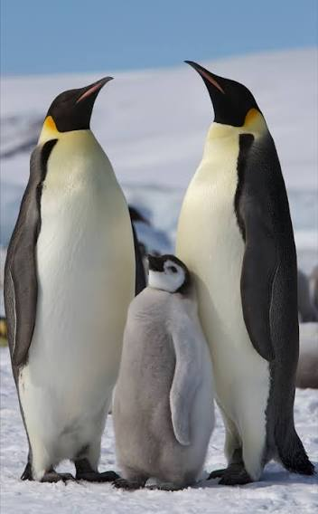
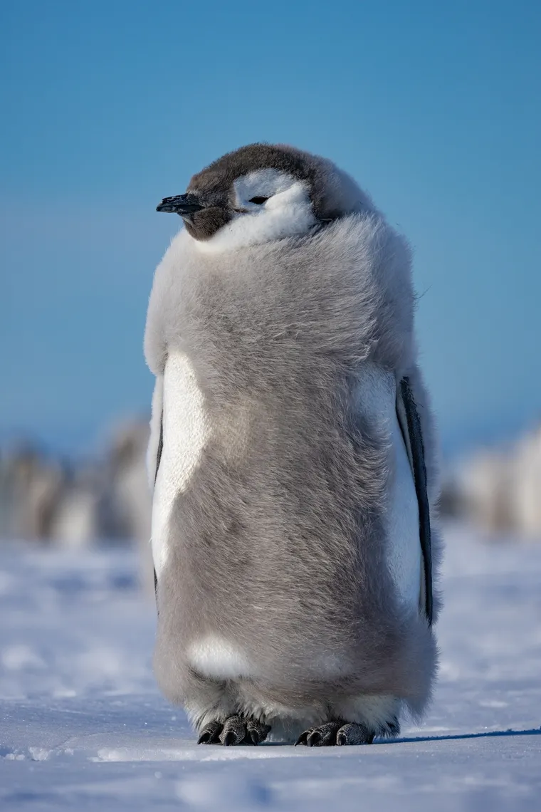

Ulagos - Informatica
Y aqui un pinguino porque son bonitos

La mejor carrera del mundo mundial
y otro pinguino porque si

unanse a ulagos
Y otro pinguino tierno
Dato curioso de los pinguinos
Confusión amistosa: Como caminan erguidos en dos patas, a veces se acercan a los humanos sin miedo porque nos confunden con otros pingüinos
El pingüino rey (Aptenodytes patagonicus) es la segunda especie de pingüino más grande, después del pingüino emperador. Se encuentra en las islas subantárticas y en la región de la Patagonia, y es conocido por su distintivo plumaje negro y blanco, así como por su comportamiento
Perfil de GitHub